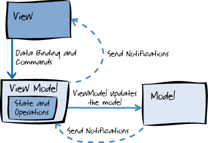

<!DOCTYPE html><html class="theme-next mist" lang="zh-Hans"><head><meta name="generator" content="Hexo 3.9.0"><meta charset="UTF-8"><meta name="baidu-site-verification" content="dil57BBbBc"><meta http-equiv="X-UA-Compatible" content="IE=edge"><meta name="viewport" content="width=device-width,initial-scale=1,maximum-scale=1"><meta name="theme-color" content="#222"><link rel="manifest" href="/manifest.json"><link rel="stylesheet" media="all" href="/lib/Han/dist/han.min.css?v=3.3"><meta http-equiv="Cache-Control" content="no-transform"><meta http-equiv="Cache-Control" content="no-siteapp"><meta name="google-site-verification" content="YH32omENY7b_BdEuIWv46jSBK-0Vyw_dWbJTGNBblT0"><link href="https://cdn.jsdelivr.net/gh/tonsky/FiraCode@1.206/distr/fira_code.css" rel="stylesheet" type="text/css"><link href="https://cdnjs.cloudflare.com/ajax/libs/font-awesome/4.7.0/css/font-awesome.min.css" rel="stylesheet" type="text/css"><link href="/css/main.css?v=5.1.4" rel="stylesheet" type="text/css"><link rel="apple-touch-icon" sizes="180x180" href="/images/favicon.ico?v=5.1.4"><link rel="icon" type="image/png" sizes="32x32" href="/images/favicon.ico?v=5.1.4"><link rel="icon" type="image/png" sizes="16x16" href="/images/favicon.ico?v=5.1.4"><link rel="icon" type="image/png" sizes="16x16" href="/images/favicon.ico?v=5.1.4"><link rel="icon" type="image/png" sizes="16x16" href="/images/favicon.ico?v=5.1.4"><link rel="icon" type="image/png" sizes="16x16" href="/images/favicon.ico?v=5.1.4"><meta name="keywords" content="MVC,MVVM,MVP,MV*,"><meta name="description" content="一切皆为数据（0，1），一切皆可量化不管承不承认，页面的展示都是数据的可视化。HTML 是数据，CSS 是数据，JS也是数据。只是这些数据的组合最终变成了我们想要的效果。最为直观的是，我们在开发者工具 Console 控制台中，输入任何形式的数据并点击 Enter 时，最终会在下方显示出来（前提是输入正确的数据类型和格式）。又或者，我们用某些参数从服务请求一个 JSON 文件，浏览器上就会展示文件"><meta name="keywords" content="MVC,MVVM,MVP,MV*"><meta property="og:type" content="article"><meta property="og:title" content="白话MVC&#x2F;MVP&#x2F;MVVM"><meta property="og:url" content="https://yexiaochen.github.io/白话MVC-MVP-MVVM/index.html"><meta property="og:site_name" content="贪空"><meta property="og:description" content="一切皆为数据（0，1），一切皆可量化不管承不承认，页面的展示都是数据的可视化。HTML 是数据，CSS 是数据，JS也是数据。只是这些数据的组合最终变成了我们想要的效果。最为直观的是，我们在开发者工具 Console 控制台中，输入任何形式的数据并点击 Enter 时，最终会在下方显示出来（前提是输入正确的数据类型和格式）。又或者，我们用某些参数从服务请求一个 JSON 文件，浏览器上就会展示文件"><meta property="og:locale" content="zh-Hans"><meta property="og:image" content="https://yexiaochen.github.io/images/MVC&MVP.jpg"><meta property="og:image" content="https://yexiaochen.github.io/images/J-20.jpg"><meta property="og:image" content="https://yexiaochen.github.io/images/MVC.png"><meta property="og:image" content="https://yexiaochen.github.io/images/MVP.png"><meta property="og:image" content="https://yexiaochen.github.io/images/MVVM.png"><meta property="og:image" content="https://yexiaochen.github.io/images/mvvmVue.png"><meta property="og:updated_time" content="2019-02-05T10:10:27.372Z"><meta name="twitter:card" content="summary"><meta name="twitter:title" content="白话MVC&#x2F;MVP&#x2F;MVVM"><meta name="twitter:description" content="一切皆为数据（0，1），一切皆可量化不管承不承认，页面的展示都是数据的可视化。HTML 是数据，CSS 是数据，JS也是数据。只是这些数据的组合最终变成了我们想要的效果。最为直观的是，我们在开发者工具 Console 控制台中，输入任何形式的数据并点击 Enter 时，最终会在下方显示出来（前提是输入正确的数据类型和格式）。又或者，我们用某些参数从服务请求一个 JSON 文件，浏览器上就会展示文件"><meta name="twitter:image" content="https://yexiaochen.github.io/images/MVC&MVP.jpg"><script type="text/javascript" id="hexo.configurations">var NexT=window.NexT||{},CONFIG={root:"/",scheme:"Mist",version:"5.1.4",sidebar:{position:"left",display:"hide",offset:12,b2t:!1,scrollpercent:!1,onmobile:!0},fancybox:!1,tabs:!0,motion:{enable:!1,async:!1,transition:{post_block:"fadeIn",post_header:"slideDownIn",post_body:"slideDownIn",coll_header:"slideLeftIn",sidebar:"slideUpIn"}},duoshuo:{userId:"0",author:"博主"},algolia:{applicationID:"",apiKey:"",indexName:"",hits:{per_page:10},labels:{input_placeholder:"Search for Posts",hits_empty:"We didn't find any results for the search: ${query}",hits_stats:"${hits} results found in ${time} ms"}}}</script><link rel="canonical" href="https://yexiaochen.github.io/白话MVC-MVP-MVVM/"><title>白话MVC/MVP/MVVM | 贪空</title><script type="text/javascript">var _hmt=_hmt||[];!function(){var e=document.createElement("script");e.src="https://hm.baidu.com/hm.js?ad8db08f31eca01d048b60d4299de095";var t=document.getElementsByTagName("script")[0];t.parentNode.insertBefore(e,t)}()</script></head><body itemscope itemtype="http://schema.org/WebPage" lang="zh-Hans"><div class="container sidebar-position-left page-post-detail"><div class="headband"></div><header id="header" class="header" itemscope itemtype="http://schema.org/WPHeader"><div class="header-inner"><div class="site-brand-wrapper"><div class="site-meta"><div class="custom-logo-site-title"><a href="/" class="brand" rel="start"><span class="logo-line-before"><i></i></span> <span class="site-title">贪空</span> <span class="logo-line-after"><i></i></span></a></div><h1 class="site-subtitle" itemprop="description">贪空 Blog</h1></div><div class="site-nav-toggle"><button><span class="btn-bar"></span> <span class="btn-bar"></span> <span class="btn-bar"></span></button></div></div><nav class="site-nav"><ul id="menu" class="menu"><li class="menu-item menu-item-home"><a href="/" rel="section"><i class="menu-item-icon fa fa-fw fa-home"></i><br>首页</a></li><li class="menu-item menu-item-tags"><a href="/tags/" rel="section"><i class="menu-item-icon fa fa-fw fa-tags"></i><br>标签</a></li><li class="menu-item menu-item-categories"><a href="/categories/" rel="section"><i class="menu-item-icon fa fa-fw fa-th"></i><br>分类</a></li><li class="menu-item menu-item-archives"><a href="/archives/" rel="section"><i class="menu-item-icon fa fa-fw fa-archive"></i><br>归档</a></li></ul></nav></div></header><main id="main" class="main"><div class="main-inner"><div class="content-wrap"><div id="content" class="content"><div id="posts" class="posts-expand"><article class="post post-type-normal" itemscope itemtype="http://schema.org/Article"><div class="post-block"><link itemprop="mainEntityOfPage" href="https://yexiaochen.github.io/白话MVC-MVP-MVVM/"><span hidden itemprop="author" itemscope itemtype="http://schema.org/Person"><meta itemprop="name" content="贪空"><meta itemprop="description" content><meta itemprop="image" content="/images/avatar.jpeg"></span><span hidden itemprop="publisher" itemscope itemtype="http://schema.org/Organization"><meta itemprop="name" content="贪空"></span><header class="post-header"><h2 class="post-title" itemprop="name headline">白话MVC/MVP/MVVM</h2><div class="post-meta"><span class="post-time"><span class="post-meta-item-icon"><i class="fa fa-calendar-o"></i> </span><span class="post-meta-item-text">发表于</span> <time title="创建于" itemprop="dateCreated datePublished" datetime="2019-02-05T18:03:01+08:00">2019-02-05 </time><span class="post-meta-divider">|</span> <span class="post-meta-item-icon"><i class="fa fa-calendar-check-o"></i> </span><span class="post-meta-item-text">更新于&#58;</span> <time title="更新于" itemprop="dateModified" datetime="2019-02-05T18:10:27+08:00">2019-02-05 </time></span><span class="post-category"><span class="post-meta-divider">|</span> <span class="post-meta-item-icon"><i class="fa fa-folder-o"></i> </span><span class="post-meta-item-text">分类于</span> <span itemprop="about" itemscope itemtype="http://schema.org/Thing"><a href="/categories/这个想法不一定对/" itemprop="url" rel="index"><span itemprop="name">这个想法不一定对</span></a></span></span><div class="post-wordcount"><span class="post-meta-item-icon"><i class="fa fa-file-word-o"></i> </span><span class="post-meta-item-text">字数统计&#58;</span> <span title="字数统计">2,191 字 </span><span class="post-meta-divider">|</span> <span class="post-meta-item-icon"><i class="fa fa-clock-o"></i> </span><span class="post-meta-item-text">阅读时长 &asymp;</span> <span title="阅读时长">8 分钟</span></div></div></header><div class="post-body han-init-context" itemprop="articleBody"><blockquote><p>一切皆为数据（0，1），一切皆可量化</p></blockquote><p>不管承不承认，页面的展示都是数据的可视化。HTML 是数据，CSS 是数据，JS也是数据。只是这些数据的组合最终变成了我们想要的效果。<br>最为直观的是，我们在开发者工具 Console 控制台中，输入任何形式的数据并点击 Enter 时，最终会在下方显示出来（前提是输入正确的数据类型和格式）。又或者，我们用某些参数从服务请求一个 JSON 文件，浏览器上就会展示文件内容。<strong><code>数据 =&gt; 视图</code></strong>，就是这么简单直接。</p><h2 id="MV"><a href="#MV" class="headerlink" title="MV"></a>MV</h2><p>然而，实际上的情况远远比这复杂。为了更好的视觉享受和用户体验，浏览器上的页面效果越来越炫，交互逻辑也越来越复杂。我们拿到的第一手数据（或来自用户，或来自服务）已经不能直接用来展示了，而是要经过相应的逻辑处理（在这里我们称第一手数据为源数据，经过逻辑处理后的数据称为目标数据）。视图上的数据就是目标数据的映射。<br>而处理后的数据又该如何展示呢？是基于 DOM 做操作，还是基于目标数据重新渲染呢？两者都可，前者是以 jQuery 为代表，后者则是以 Vue 等新框架为主。举个例子🌰，对于某个 DOM 元素的显隐。</p><figure class="highlight html"><table><tr><td class="gutter"><pre><span class="line">1</span><br><span class="line">2</span><br><span class="line">3</span><br><span class="line">4</span><br><span class="line">5</span><br><span class="line">6</span><br><span class="line">7</span><br><span class="line">8</span><br><span class="line">9</span><br><span class="line">10</span><br><span class="line">11</span><br></pre></td><td class="code"><pre><span class="line"><span class="comment">&lt;!-- jQuery --&gt;</span></span><br><span class="line"><span class="tag">&lt;<span class="name">div</span> <span class="attr">id</span>=<span class="string">'jquery'</span>&gt;</span><span class="tag">&lt;/<span class="name">div</span>&gt;</span></span><br><span class="line">$('#jquery').hide;</span><br><span class="line"></span><br><span class="line"><span class="comment">&lt;!-- Vue --&gt;</span></span><br><span class="line"><span class="tag">&lt;<span class="name">div</span> <span class="attr">id</span>=<span class="string">'jquery'</span> <span class="attr">v-show</span>=<span class="string">&#123;id[jquery]&#125;</span>&gt;</span><span class="tag">&lt;/<span class="name">div</span>&gt;</span></span><br><span class="line">data: &#123;</span><br><span class="line">    id: &#123;</span><br><span class="line">        jquery: fasle</span><br><span class="line">    &#125;</span><br><span class="line">&#125;</span><br></pre></td></tr></table></figure><p>基于 DOM 操作， 如果我们需要对这个 DOM 随时改变显隐，就需要不断操作 DOM 来更改样式。 如果基于数据操作，我们只需要更改 jQuery 的值即可。<br>我们再回到刚才的话题，对于复杂的交互页面，<strong><code>数据 =&gt; 视图</code></strong> 的关系已经不再像之前那么纯净了。为了应付复杂的场景，<code>数据</code> 和 <code>视图</code> 不再是狭义上的数据和视图。<code>数据</code>包括了数据和数据相关的操作，<code>视图</code>包括了视图和对视图相关的一些操作。</p><h2 id="MV-模式"><a href="#MV-模式" class="headerlink" title="MV*模式"></a>MV*模式</h2><p>借用其他领域 <code>MV*</code> 框架模式，这里的 <code>数据</code> 和 <code>视图</code> 对应着 <code>Model</code> 和 <code>View</code>. 简单点的页面，<strong><code>Model - View</code></strong> 完全能够应付过来。但是复杂的场景，<code>Model</code> 和 <code>View</code> 会分担太多的逻辑而显得臃肿，甚至可能包含了不在自己职责范围内的逻辑。此时我们就要借助第三者来协调 <code>Model</code> 和 <code>View</code> 之间的关系。如何合作，其实也早有了相应的解决方案。比如 MVC、MVP、MVVM。因为重点始终在于协调 <code>Model</code>和 <code>View</code>，所以它们统称为 <code>MV*</code>。</p><p></p><p>MVC (Model(模型)-View(视图)-Controller(控制器)), MVP (Model(模型)-View(视图)-Presenter(中介者)) 以及 MVVM (Model(模型)-View(视图)-ViewModel(视图模型))，是种模式也是种抽象的概念。每一种模式在实践中可能存在着不同的变体，但这不妨碍它们属于同一个模式。每一种模式的不同变体都是为了解决不同问题而产生的，所以它们没有什么优劣之分。<br>现在我们就把三种模式拟人化来阐述不同模式的运作方式。</p><p>由四节电池驱动的J-20模型:<br></p><h2 id="MVC"><a href="#MVC" class="headerlink" title="MVC"></a>MVC</h2><blockquote><p>公司：飞机模型制造商 =&gt; 生产的飞机模型可以自主塑形。<br>模式：<strong>MVC</strong><br>飞机模型 V：由模型数据生产出的模型。职责有：由模型数据自主塑形、将收集用户反馈并转发。<br>工程师 M：负责将客服的需求参数转换成最终的模型数据。职责有：对数据的操作、通知飞机模型更新。<br>工程师 C：协调 M 和 V。负责响应用户、调用工程师M生成目标数据。</p></blockquote><p>首先我们要知道，客户提出了想要一个 <code>60cm * 60cm</code> 的飞机模型，这个需求到了制造商那里肯定不是给出个 <code>60cm * 60cm</code> 的小方块，而是根据需求计算处理生产真正的飞机模型（比如什么样的造型设计才能最大减少阻力），工程师M的工作之一就是根据原始数据并结合特定的逻辑规则给出最终的模型数据。<br>现在，用户手里有一飞机模型V，不过这个飞机模型的飞机双翼和用户想象的不一样。于是用户根据飞机模型上提供的方式反馈了问题（比如飞机模型提供了留言功能，用来收集用户反馈）。工程师C收到了反馈后，把工程师M拉过来对数据进行处理并生成新的模型数据，并让工程师M通知到共享相同数据的飞机模型去更新数据自主调整。插一句，说到调整，我们有两种方式。一个是，我们可以针对用户不满意的地方（飞机双翼）进行调整。一个是，我们飞机模型格式化按照最新的数据模型重新初始化一下。前者可以认为就是基于 DOM 操作的方式，后者就是基于数据的处理方式。在 MVC 中，Model 和 View 之间耦合，视图的更新需要 Model 去直接通知。Model 内因为有 View 的引用才能让视图更新。</p><p></p><h2 id="MVP"><a href="#MVP" class="headerlink" title="MVP"></a>MVP</h2><p>如果 Model 只想做数据相关的操作，把通知 View 的逻辑挪到了 Control 里，这时 Control 摇身一变称为了 Presenter。因为解耦了 Model 和 View，也使得它们的职责划分更加清晰。</p><blockquote><p>公司：飞机模型制造商 =&gt; 生产的飞机模型可以自主塑形。<br>模式：<strong>MVP</strong><br>飞机模型 V：由模型数据生产出的模型。职责有：由模型数据自主塑形、将收集用户反馈并转发。<br>工程师 M：负责将客服的需求参数转换成最终的模型数据。职责有：对数据的操作。<br>工程师 P：协调 M 和 V。负责响应用户、调用工程师M生成目标数据、更新视图。</p></blockquote><p>在 MVP 模式中，工程师M的工作专注于数据，通知的活甩给了工程师P。<br>和 MVC 同样的场景，工程师P接到反馈后，把工程师M拉过来处理了数据，然后又让飞机模型依据已经处理后的数据自主调整。每次数据的变化都要主动去通知视图更新。</p><p></p><h2 id="MVVM"><a href="#MVVM" class="headerlink" title="MVVM"></a>MVVM</h2><p>如果数据变化能够自主触发视图更新，对 Presenter 来说也会轻松不少。于是 Presenter 再次摇身一变 称为了 ViewModel。</p><blockquote><p>公司：飞机模型制造商 =&gt; 生产的飞机模型可以自主塑形。<br>模式：<strong>MVVM</strong><br>飞机模型 V：由模型数据生产出的模型。职责有：由模型数据自主塑形、将收集用户反馈并转发。<br>工程师 M：负责将客服的需求参数转换成最终的模型数据。职责有：对数据的操作。<br>工程师 VM：协调 M 和 V。负责响应用户、调用工程师M生成目标数据并更新视图。</p></blockquote><p></p><p>在 MVVM 中，View 和 Model 的变化似乎不大。为了在数据变化后能够自动更新视图，ViewModel 进行了所谓的数据绑定。ViewModel 将 <strong>目标数据</strong> 和视图进行了绑定，在最终生成目标数据时，会触发视图的更新。在这里我们可以想象有两份数据，一份是源数据，一份是目标数据。绑定视图的是目标数据，这样，我们直接修改目标数据时会触发视图更新。如果是源数据经处理后赋给目标数据，目标数据也会改变，也会触发试图更新。总之，在 MVVM 中，视图是目标数据的可视化，通过改变视图里的数据也就等于改变了目标数据。<br>和 MVC、MVP 同样的场景，不过科技发达了，工程师VM有个自动化处理程序。用户反馈了问题，工程师VM的这个自动处理程序接到反馈自动处理并将结果发给飞机模型让其自主调整。</p><p>以下是Vue的MVVM示意图：<br><br>MVC、MVP和MVVM大致就是如此，根据三种模式以及不同场景，最终演变出了不同的变体。<br>但是，不同的变体是针对不同问题的解决方案，指不定后来还会有 MVA、MVB…, 谁知道呢</p></div><div><div><div style="text-align:center;color:#555;font-size:18px">------------- The End -------------</div></div></div><div><ul class="post-copyright"><li class="post-copyright-author"><strong>本文作者：</strong> 贪空</li><li class="post-copyright-link"><strong>本文链接：</strong> <a href="https://yexiaochen.github.io/白话MVC-MVP-MVVM/" title="白话MVC/MVP/MVVM">https://yexiaochen.github.io/白话MVC-MVP-MVVM/</a></li><li class="post-copyright-license"><strong>版权声明： </strong>本博客所有文章除特别声明外，均采用 <a href="https://creativecommons.org/licenses/by-nc-sa/3.0/" rel="external nofollow noopener noreferrer" target="_blank">CC BY-NC-SA 3.0</a> 许可协议。转载请注明出处！</li></ul></div><footer class="post-footer"><div class="post-tags"><a href="/tags/MVC/" rel="tag"><i class="fa fa-tag"></i> MVC</a> <a href="/tags/MVVM/" rel="tag"><i class="fa fa-tag"></i> MVVM</a> <a href="/tags/MVP/" rel="tag"><i class="fa fa-tag"></i> MVP</a> <a href="/tags/MV/" rel="tag"><i class="fa fa-tag"></i> MV*</a></div><div class="post-nav"><div class="post-nav-next post-nav-item"><a href="/在JavaScript中尝试组合模式/" rel="next" title="在JavaScript中尝试组合模式"><i class="fa fa-chevron-left"></i> 在JavaScript中尝试组合模式</a></div><span class="post-nav-divider"></span><div class="post-nav-prev post-nav-item"><a href="/关于MVC模式简单代码实现/" rel="prev" title="关于MVC模式简单代码实现">关于MVC模式简单代码实现 <i class="fa fa-chevron-right"></i></a></div></div></footer></div></article><div class="post-spread"></div></div></div><div class="comments" id="comments"><div onclick="showGitment()" id="gitment-display-button">显示评论</div><div id="gitment-container" style="display:none"></div></div></div><div class="sidebar-toggle"><div class="sidebar-toggle-line-wrap"><span class="sidebar-toggle-line sidebar-toggle-line-first"></span> <span class="sidebar-toggle-line sidebar-toggle-line-middle"></span> <span class="sidebar-toggle-line sidebar-toggle-line-last"></span></div></div><aside id="sidebar" class="sidebar"><div id="sidebar-dimmer"></div><div class="sidebar-inner"><ul class="sidebar-nav motion-element"><li class="sidebar-nav-toc sidebar-nav-active" data-target="post-toc-wrap">文章目录</li><li class="sidebar-nav-overview" data-target="site-overview-wrap">站点概览</li></ul><section class="site-overview-wrap sidebar-panel"><div class="site-overview"><div class="site-author motion-element" itemprop="author" itemscope itemtype="http://schema.org/Person"><p class="site-author-name" itemprop="name">贪空</p><p class="site-description motion-element" itemprop="description"></p></div><nav class="site-state motion-element"><div class="site-state-item site-state-posts"><a href="/archives/"><span class="site-state-item-count">68</span> <span class="site-state-item-name">日志</span></a></div><div class="site-state-item site-state-categories"><a href="/categories/index.html"><span class="site-state-item-count">11</span> <span class="site-state-item-name">分类</span></a></div><div class="site-state-item site-state-tags"><a href="/tags/index.html"><span class="site-state-item-count">118</span> <span class="site-state-item-name">标签</span></a></div></nav><div class="links-of-author motion-element"><span class="links-of-author-item"><a href="mailto:2277438436@qq.com" target="_blank" title="E-Mail" rel="external nofollow noopener noreferrer"><i class="fa fa-fw fa-envelope"></i>E-Mail</a></span></div></div></section><section class="post-toc-wrap motion-element sidebar-panel sidebar-panel-active"><div class="post-toc"><div class="post-toc-content"><ol class="nav"><li class="nav-item nav-level-2"><a class="nav-link" href="#MV"><span class="nav-number">1.</span> <span class="nav-text">MV</span></a></li><li class="nav-item nav-level-2"><a class="nav-link" href="#MV-模式"><span class="nav-number">2.</span> <span class="nav-text">MV*模式</span></a></li><li class="nav-item nav-level-2"><a class="nav-link" href="#MVC"><span class="nav-number">3.</span> <span class="nav-text">MVC</span></a></li><li class="nav-item nav-level-2"><a class="nav-link" href="#MVP"><span class="nav-number">4.</span> <span class="nav-text">MVP</span></a></li><li class="nav-item nav-level-2"><a class="nav-link" href="#MVVM"><span class="nav-number">5.</span> <span class="nav-text">MVVM</span></a></li></ol></div></div></section></div></aside></div></main><footer id="footer" class="footer"><div class="footer-inner"><div class="copyright">&copy; 2018 &mdash; <span itemprop="copyrightYear">2023</span> <span class="with-love"><i class="fa fa-user"></i> </span><span class="author" itemprop="copyrightHolder">贪空</span></div></div></footer><div class="back-to-top"><i class="fa fa-arrow-up"></i></div></div><script type="text/javascript">"[object Function]"!==Object.prototype.toString.call(window.Promise)&&(window.Promise=null)</script><script type="text/javascript" src="https://cdnjs.cloudflare.com/ajax/libs/jquery/3.3.1/jquery.min.js"></script><script type="text/javascript" src="https://cdnjs.cloudflare.com/ajax/libs/fastclick/1.0.6/fastclick.min.js"></script><script type="text/javascript" src="https://cdnjs.cloudflare.com/ajax/libs/jquery_lazyload/1.9.7/jquery.lazyload.min.js"></script><script type="text/javascript" src="https://cdnjs.cloudflare.com/ajax/libs/velocity/1.2.1/velocity.min.js"></script><script type="text/javascript" src="https://cdnjs.cloudflare.com/ajax/libs/velocity/1.2.1/velocity.ui.min.js"></script><script type="text/javascript" src="/js/src/utils.js?v=5.1.4"></script><script type="text/javascript" src="/js/src/motion.js?v=5.1.4"></script><script type="text/javascript" src="/js/src/scrollspy.js?v=5.1.4"></script><script type="text/javascript" src="/js/src/post-details.js?v=5.1.4"></script><script type="text/javascript" src="/js/src/bootstrap.js?v=5.1.4"></script><link rel="stylesheet" href="https://cdn.jsdelivr.net/npm/gitalk@1/dist/gitalk.css"><script src="https://cdn.jsdelivr.net/npm/gitalk@1/dist/gitalk.min.js"></script><style>a.gitment-editor-footer-tip{display:none}.gitment-container.gitment-footer-container{display:none}</style><script type="text/javascript">function renderGitment(){new Gitalk({id:window.decodeURIComponent(window.location.pathname),owner:"yexiaochen",repo:"blogComments",distractionFreeMode:!1,admin:["yexiaochen"],clientSecret:"5df7f4f6edb8a65fef2d0cf7cb6fa40b04a44525",clientID:"fad749b2b67be41f767a"}).render("gitment-container")}function showGitment(){document.getElementById("gitment-display-button").style.display="none",document.getElementById("gitment-container").style.display="block",renderGitment()}</script><script>!function(){var t=document.createElement("script"),e=window.location.protocol.split(":")[0];t.src="https"===e?"https://zz.bdstatic.com/linksubmit/push.js":"http://push.zhanzhang.baidu.com/push.js";var s=document.getElementsByTagName("script")[0];s.parentNode.insertBefore(t,s)}()</script></body></html>